Office of the Supreme Leader (Beit-e Rahbari)
5 of 14 taken outThe Supreme Leader
Emptied once since June 2025
Checked 3 November 2026
Who runs the Islamic Republic, branch by branch, and which of them have been taken out since June 2025.
The latest to fall
In placeTaken outDied, removed or arrestedFate unknown
Pinch or scroll to zoom. Drag to move. Tap a face.
The 20 people who run the Islamic Republic now, in order of real power. Tap anyone for the whole story.
marks a key player everywhere on the board.
Taken out since June 2025. Tap anyone to see who took their chair.
Tap a branch to walk inside it. Tap any face for the whole story.
The Supreme Leader
Emptied once since June 2025
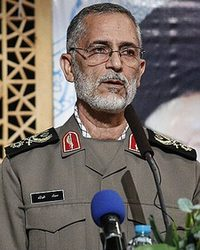
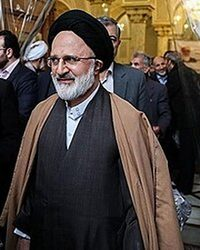
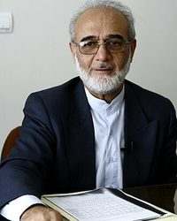
 5 of 14 taken outSupreme National Security Council17 people
5 of 14 taken outSupreme National Security Council17 people Masoud PezeshkianPresident of the Islamic Republic (2024-)In place
Masoud PezeshkianPresident of the Islamic Republic (2024-)In place
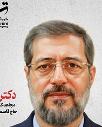

 2 of 17 taken outGeneral Staff of the Armed Forces28 people
2 of 17 taken outGeneral Staff of the Armed Forces28 people Ali AbdollahiChief of the General Staff of the Armed Forces (since 10 Aug 2026), heading the General Staff merged with Khatam al-Anbiya Central HQ, which he commanded from 2025In placeNot yet in this chair
Ali AbdollahiChief of the General Staff of the Armed Forces (since 10 Aug 2026), heading the General Staff merged with Khatam al-Anbiya Central HQ, which he commanded from 2025In placeNot yet in this chair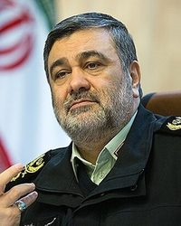

 12 of 28 taken outIRGC (Revolutionary Guards)64 peopleAhmad VahidiCommander-in-Chief of the IRGC (since 1 March 2026)In placeNot yet in this chair
12 of 28 taken outIRGC (Revolutionary Guards)64 peopleAhmad VahidiCommander-in-Chief of the IRGC (since 1 March 2026)In placeNot yet in this chair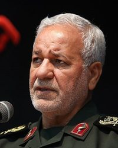


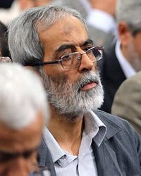
27 of 64 taken outArtesh (the Army of the Islamic Republic)17 people Amir HatamiCommander-in-Chief of the Army (Artesh) (2025-present)In place
Amir HatamiCommander-in-Chief of the Army (Artesh) (2025-present)In place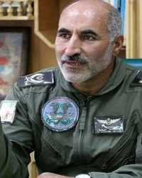

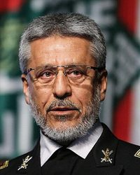
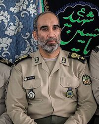
 0 of 17 taken outFARAJA (the police)12 peopleAhmad-Reza RadanCommander-in-Chief of the Police (FARAJA) (Jan 2023-)In place
0 of 17 taken outFARAJA (the police)12 peopleAhmad-Reza RadanCommander-in-Chief of the Police (FARAJA) (Jan 2023-)In place

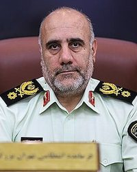
1 of 12 taken outMOIS (Ministry of Intelligence)6 peopleActing Minister of Intelligence (name not published)Acting Minister of Intelligence (since March 2026; name not published)In placeNot yet in this chair?4 of 6 taken outThe presidency and government45 peopleMasoud PezeshkianPresident of the Islamic Republic (2024-)In place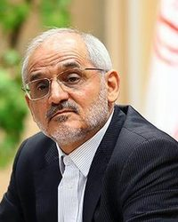


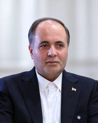
1 of 45 taken outThe judiciary13 people Gholam-Hossein Mohseni-EjeiChief Justice (2021-, reappointed July 2026)In place
Gholam-Hossein Mohseni-EjeiChief Justice (2021-, reappointed July 2026)In place

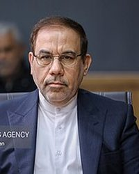

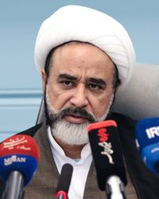
3 of 13 taken outParliament (Majlis)285 members Mohammad Bagher GhalibafSpeaker of Parliament (2020-, re-elected May 2026); led Iran's delegation at the April 2026 Islamabad talks with the USIn place
Mohammad Bagher GhalibafSpeaker of Parliament (2020-, re-elected May 2026); led Iran's delegation at the April 2026 Islamabad talks with the USIn place
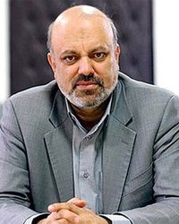
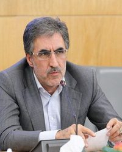
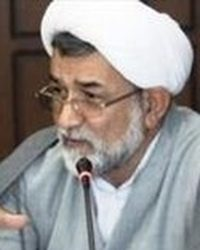
 0 of 285 taken outThe Guardian Council12 peopleAhmad JannatiSecretary of the Guardian Council (since 1992)In place
0 of 285 taken outThe Guardian Council12 peopleAhmad JannatiSecretary of the Guardian Council (since 1992)In place


 0 of 12 taken outThe Assembly of Experts87 members
0 of 12 taken outThe Assembly of Experts87 members Mohammad-Ali Movahedi KermaniChairman of the Assembly of Experts (since May 2024); Tehran interim Friday prayer leader (since 2012)In place
Mohammad-Ali Movahedi KermaniChairman of the Assembly of Experts (since May 2024); Tehran interim Friday prayer leader (since 2012)In place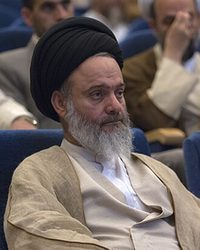

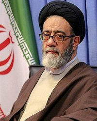

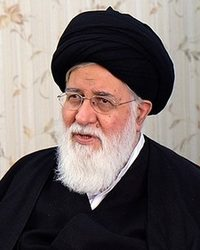
0 of 87 taken outThe Expediency Council36 membersSadegh Amoli LarijaniChairman of the Expediency Discernment Council (since 2018)In place
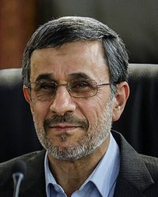
+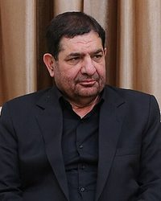
0 of 36 taken outThe provinces70 people
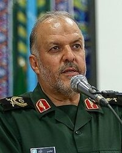

 0 of 70 taken outBonyads (the state foundations)4 peopleHossein DehghanHead of the Mostazafan Foundation (2023-)In place0 of 4 taken outState media and clerics9 people
0 of 70 taken outBonyads (the state foundations)4 peopleHossein DehghanHead of the Mostazafan Foundation (2023-)In place0 of 4 taken outState media and clerics9 people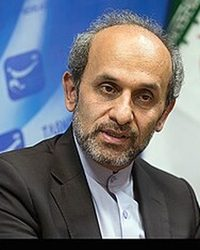
Peyman JebelliHead of IRIB (state broadcaster)In place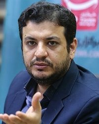


 0 of 9 taken outThe nuclear programme27 people
0 of 9 taken outThe nuclear programme27 people Mohammad Mehdi TehranchiPresident of Islamic Azad University; physicistTaken out · 13 June 2025In place
Mohammad Mehdi TehranchiPresident of Islamic Azad University; physicistTaken out · 13 June 2025In place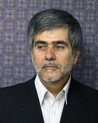
22 of 27 taken outFormer officials and power brokers25 people Ebrahim RaisiPresident (2021-2024)Died · 19 May 2024In place
Ebrahim RaisiPresident (2021-2024)Died · 19 May 2024In place +
+
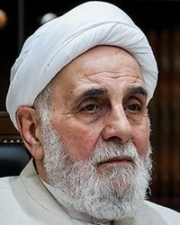
1 of 25 taken outEmptied once since June 2025
Emptied once since June 2025
Emptied 2 times since June 2025
Emptied 2 times since June 2025
Emptied 2 times since June 2025
Emptied once since June 2025
Emptied once since June 2025
Emptied once since June 2025
Emptied 2 times since June 2025
Emptied 2 times since June 2025
Emptied once since June 2025
Nobody here matches.
Nobody here matches.
Nobody here matches.
Tap a province
Lighter: more of its officials on this board. Red: one of them was taken out.
7 on record
10 on record
7 on record
7 on record
24 on record
24 on record
17 on record
11 on record
12 on record
7 on record
6 on record
25 on record
14 on record
12 on record
26 on record
6 on record
10 on record
13 on record
11 on record
17 on record
7 on record
7 on record
5 on record
23 on record
7 on record
12 on record
6 on record
57 on record
16 on record
7 on record
8 on record
Emptied 2 times since June 2025
Nobody here matches.
The odds, prices of Nov 3, 12:28 UTC
The betting markets on the regime, read every hour. The number is the market’s chance; tap one to see it on the market.
The biggest step comes between Dec 31 and Jun 30, 2027: +15 points.
The money sees little change from Nov 5 to Nov 7.
The war that began on 28 February 2026 is unresolved. Its main phase stopped with the Pakistan-brokered ceasefire of 8 April, and the US declared Operation Epic Fury concluded on 5 May. The Islamabad Memorandum signed on 17 June paused fighting for 60 days but collapsed on 7-8 July: the Islamic Republic hit three ships, and the US struck Iran for 13 straight nights and reinstated its naval blockade. Another round of US strikes ran from 30 August to mid-September. Since then there have been no US or Israeli strikes on Iranian territory on the pages read; the blockade stays, and the IRGC has attacked ships near Hormuz at a record rate (at least 12 in the week to 5 October and 12 more from 11 to 16 October). The Islamic Republic's president calls it 'neither war nor peace'. No senior official has been killed by a US or Israeli strike since 6 April (Kamal Kharazi, who died on 9 April, died of earlier wounds). Talks: Qatar and Pakistan carry messages. The Islamic Republic rejected a Qatari peace plan on 28 October; the same day the Wall Street Journal reported that JD Vance had written, at Trump's direction, to Supreme National Security Council secretary Mohsen Rezaei; and Qatari mediators were back in Tehran on 30 October. Threats: Trump promised no attack before the 3 November midterms, but said on 24 October a strike could come 'maybe tomorrow' and told Axios 'we need to finish the job, either through a deal or another way'. Netanyahu, whose bloc came first but short of a majority in Israel's 27 October election, has ordered the IDF and Mossad to work to topple the regime. ABC, the New York Times and Axios (via Gulf News) report joint US-Israeli plans for a short, intense campaign after the midterms; Trump has not decided.
en.wikipedia.orgen.wikipedia.orgaljazeera.comcbsnews.comStarted from the chart by @HekasrehCrisis (6 April 2026), checked person by person and brought up to date. Province outlines: geoBoundaries (CC BY 4.0). See something wrong or someone missing? Tell me in the note box on this page and I fix it.
Say it where other readers can answer you. Opinions, videos and corrections about the Regime Board are all in one place.
Discussion
The fall that mattered most, a face I have wrong, a fall I missed, or the camp you would put someone in. Bring the source if you have one. What readers post is their words, not mine. My answers carry the Host tag.
Leave out anything private about anyone. The rules, what your account keeps, and what readers have changed so far